Two-page spreads become two pages
A sheet holding a left and a right page is cut at the gutter, in reading order. A blank side produces no page. Sheets with two pages one above the other are cut into a top and a bottom page.
2.0 beta Free and open source · Linux, macOS, Windows
Briss finds the printed area of every page, cuts away the scanner borders and margins, and splits two-page scans into single pages, so the text fills your e-reader, tablet or phone.
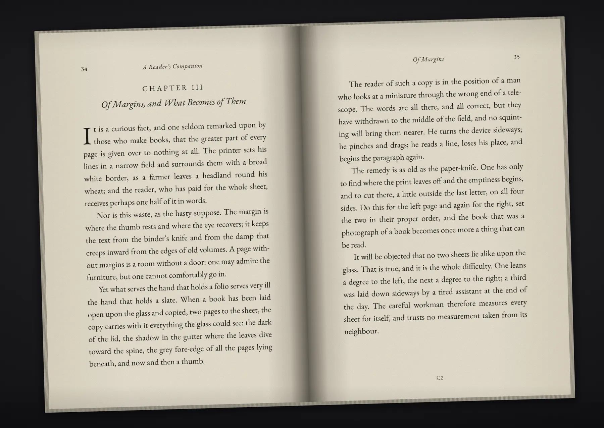
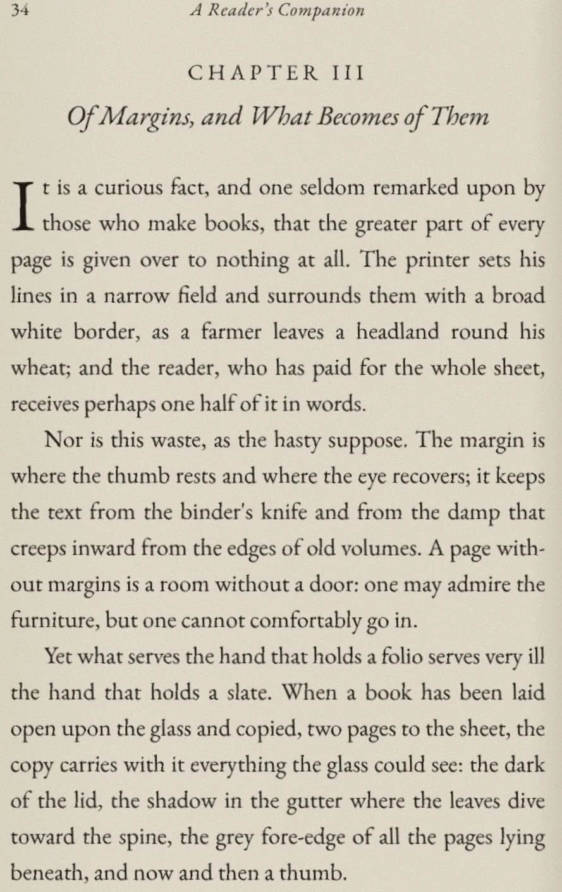
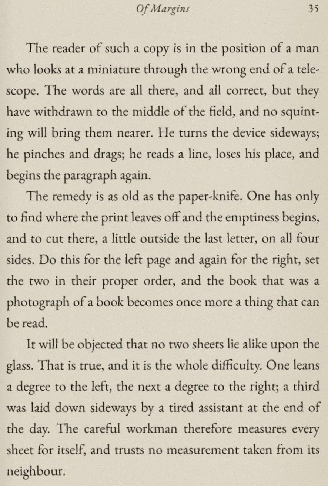
A book laid open on the scanner: two pages per sheet, a dark border, a shadow in the gutter, and everything leaning a degree and a half.
These are not mock-ups. The sheet is a synthetic scan; the boxes, the pages and the numbers below are what Briss 2.0 beta produced from it.
What it does
On scans, Briss looks at each page on its own. It ignores scanner borders, binding shadows, page edges and dust, and works out what a careful person would keep.
A sheet holding a left and a right page is cut at the gutter, in reading order. A blank side produces no page. Sheets with two pages one above the other are cut into a top and a bottom page.
Pages stored sideways or upside down are turned before anything else, so a spread scanned sideways still comes out as its left and right page.
Each page is straightened by its own angle, without re-encoding the scan.
Scanned pages get an invisible text layer you can search, select and copy, read by Tesseract.
Split two-column papers into one column per page, or every page into a top and a bottom half, for small screens. No line is cut in two.
Every left page and every right page comes out the same size, so the text does not swell and shrink as you turn pages.
Bookmarks, links, named destinations and encryption survive cropping and splitting. Only the visible page box changes.
Keep running headers, footers and page numbers inside the crop, or let them go with the margins. Chosen once for the whole book.
Born-digital PDFs use the original Briss auto-crop: pages are grouped by size and by odd or even side, and each group gets one crop.
The desktop app
Each file is cropped straight away and saved next to the original as NAME_cropped.pdf. Folders work too.
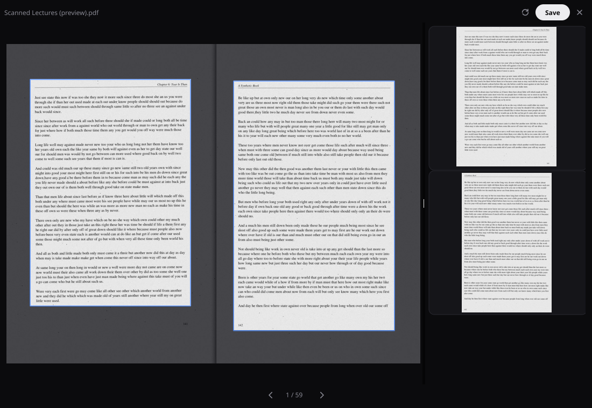
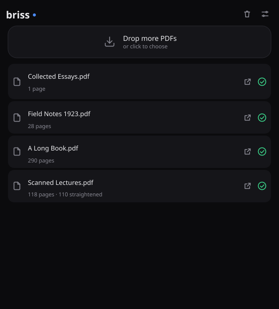
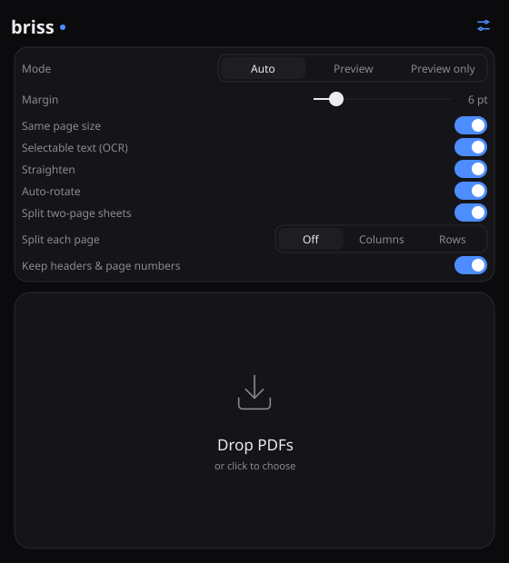
The command line
The same engine, scriptable. Detect, look, correct, apply; JSON output and exit codes for pipelines. The Briss 2.0 options -s and -d still work.
briss crop "A Reader's Companion.pdf" --straighten --normalize --keep-headers --margin 6pt
A Reader's Companion.pdf: 3 pages, 3 clusters (cv@1)
cluster 0, odd pages 1, 1056x749 pt:
note: auto: 3 of 3 sampled pages are scans; detected page by page; 1 of 1 pages split into two
cluster 1, even pages 2, 1056x749 pt:
note: auto: 3 of 3 sampled pages are scans; detected page by page; 1 of 1 pages split into two
cluster 2, odd pages 3, 749x1056 pt:
note: auto: 3 of 3 sampled pages are scans; detected page by page; 1 of 1 pages split into two; 1 turned upright
turned 2 pages upright
straightened 6 pages
wrote A Reader's Companion_cropped.pdf: 6 pages (3 added by splits) in 1065 ms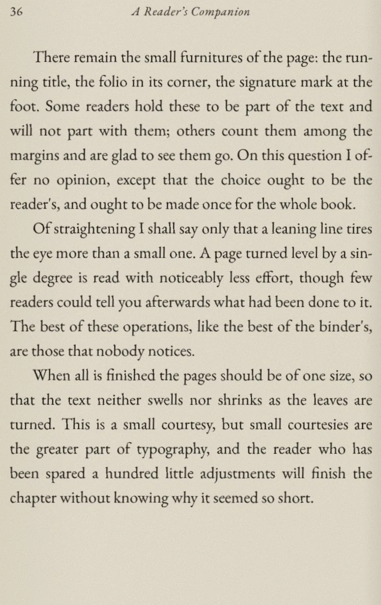
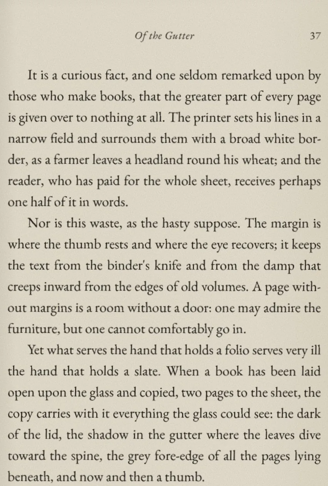
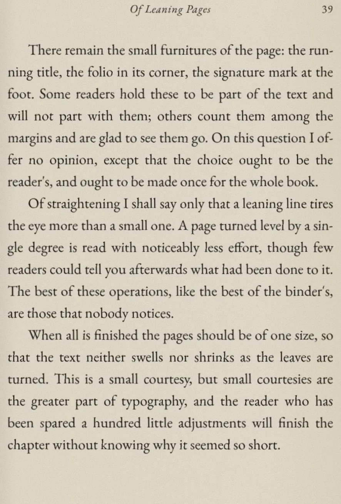
briss preview "A Reader's Companion.pdf" --keep-headers --out preview
preview/A Reader's Companion_page001.png
preview/A Reader's Companion_page002.png
preview/A Reader's Companion_page003.png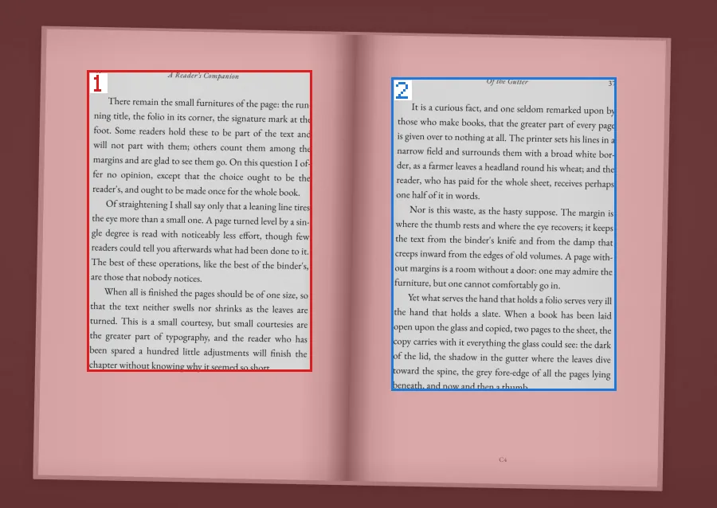
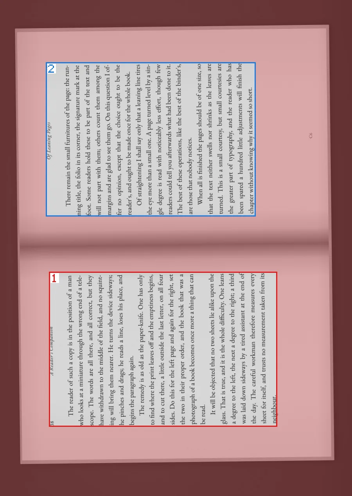
One PNG per sheet. What would be cut away is tinted red; each rectangle is numbered in output order.
briss detect scan.pdf --keep-headers --save-crops scan.crops.json
scan.pdf: 3 pages, 3 clusters (cv@1) ...
crop definition: scan.crops.json
cat scan.crops.json
"page_overrides": {
"1": [{"l": 0.136, "b": 0.142, "r": 0.547, "t": 0.149, "angle": -1.63},
{"l": 0.557, "b": 0.212, "r": 0.124, "t": 0.129, "angle": -1.54}],
"3": [{"l": 0.139, "b": 0.139, "r": 0.212, "t": 0.548, "angle": -0.68, "turn": 90}, ...
briss apply scan.pdf --crops scan.crops.json -o book.pdf
turned 2 pages upright
wrote book.pdf: 6 pages (3 added by splits) in 7 msEach rectangle says how much of the sheet is cut from the left, bottom, right and top, as a fraction. Edit the numbers, then apply the file.
briss crop paper.pdf --split-col # two-column pages into two pages each
briss crop book.pdf -o small.pdf --margin 3pt # leave 3 points of margin
briss crop scan.pdf --ocr --ocr-lang eng+deu # selectable text, two languages
briss crop book.pdf --exclude "1-3;10" # covers and plates cropped on their own
briss crop book.pdf --dry-run --json # report what would be cut, write nothing
briss -s in.pdf -d out.pdf --split-col # the Briss 2.0 command line still worksExit codes: 0 done, 1 wrong command line, 2 unreadable input, 3 detector not available, 4 could not write the output.
Download
Free software under the GPL v3. It works on real books, but it is a beta and has only been tried on a few machines: please report what goes wrong.
Briss-macos-apple-silicon.zip
Briss-macos-intel.zip
Unzip and drag Briss.app to Applications. It is not signed yet: the first time, right-click it and choose Open.
Briss-windows-amd64.zip
Run Briss.exe. If SmartScreen warns about an unknown publisher, choose More info, then Run anyway.
Briss-linux-amd64.tar.gz
Unpack and run Briss/briss-gui.
The same releases page has briss as a single program file for each system. Or build it with Go:
git clone https://github.com/jarofclay/briss-go.git
cd briss-go
go build -o briss ./cmd/brissOCR uses Tesseract, installed separately. Briss finds it on its own.
brew install tesseract # macOS
sudo apt install tesseract-ocr # Debian, UbuntuOn Windows, use the UB Mannheim installer.